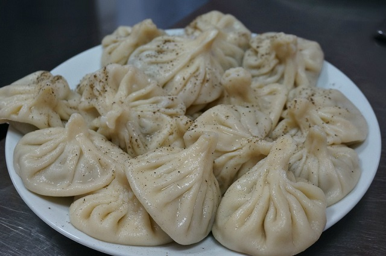
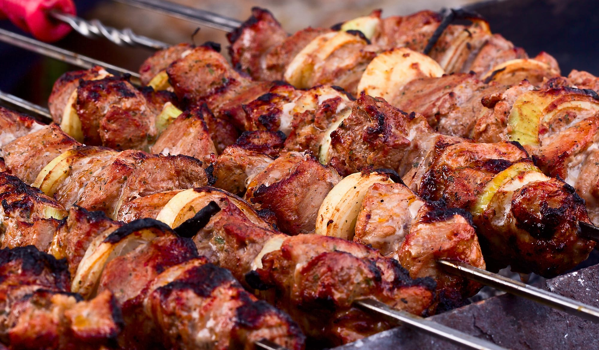
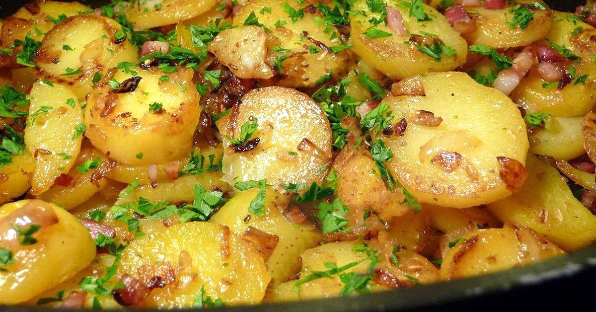

<!-- 1)კომენტარის სახით ახსენით თუ რა არის empty თეგი,ასევე ახსენით რა არის container თეგი

empty tag aris tagi romelsac marto gamxsneli tagi aqvs, xolo container tag aris tagi romelsac gamxsnelic da damxuravi tagi aqvs

2)კომენტარის სახით ახსენით თუ რატომ არის საჭირო head და body თეგები 

head tagshi shegvidzlia shevcvalot websiteis saxeli da body tagshi ki vsvavt yvelafers rac chans tviton websiteze

2)კომენტარის სახით ახსენით თუ რომელი თეგის გამოყენებით ვამატებთ ჩვენს ვებსაიტზე სურათებს,ასევე მიუწერეთ თუ რომელი თეგია სურათისთვის განკუთვნილი თეგი container თუ empty და რატომ

chvens vebsaitze suratebs vamatebt img tagit da is aris container tagi radgan gamxsneli tagic aqvs da damxuravic 

3)კომენტარის სახით ახსენით თუ რა არის img თეგში მყოფი alt ატრიბუთი და რაში ვიყენებთ მას

alt atriburi aris imistvis rom tu fotos linki an waishleba an daziendeba, momxmarebels rom gavagebinot rom mand surati unda yofiliyo da avgwerot kidevac risi surati unda yofiliyo

4)შექმენით ვებსაიტი სადაც გექნებათ მოთავსებული 3 ფოტო,პირველი ფოტო იყოს 19 ნაოჭიანი ხინკლის ფოტო :D🥟,მეორე იყოს კაი ცხელ ცხელი მწვადის ფოტო🥩🍖 და მესამე იყოს,შემწვარი კარტოფილის ფოტო🥔🥔(გადმოიწერეთ ფოტოები და მასე დაამატეთ თქვენს ვებსაიტზე)<3 -->

<body>
    
    
    
</body>


